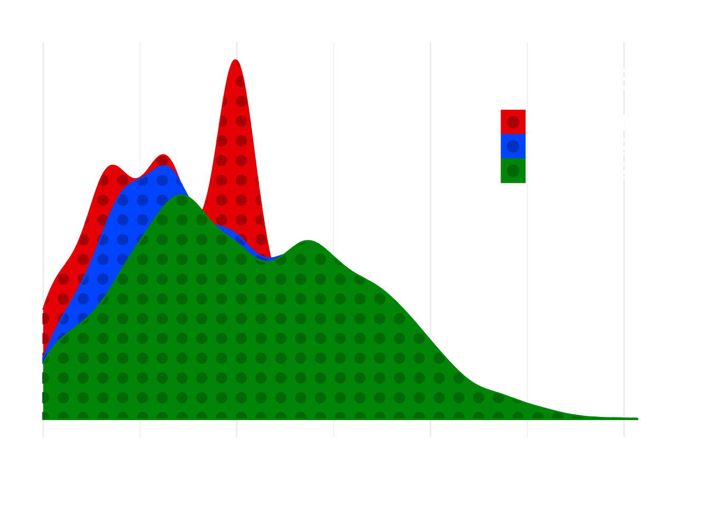
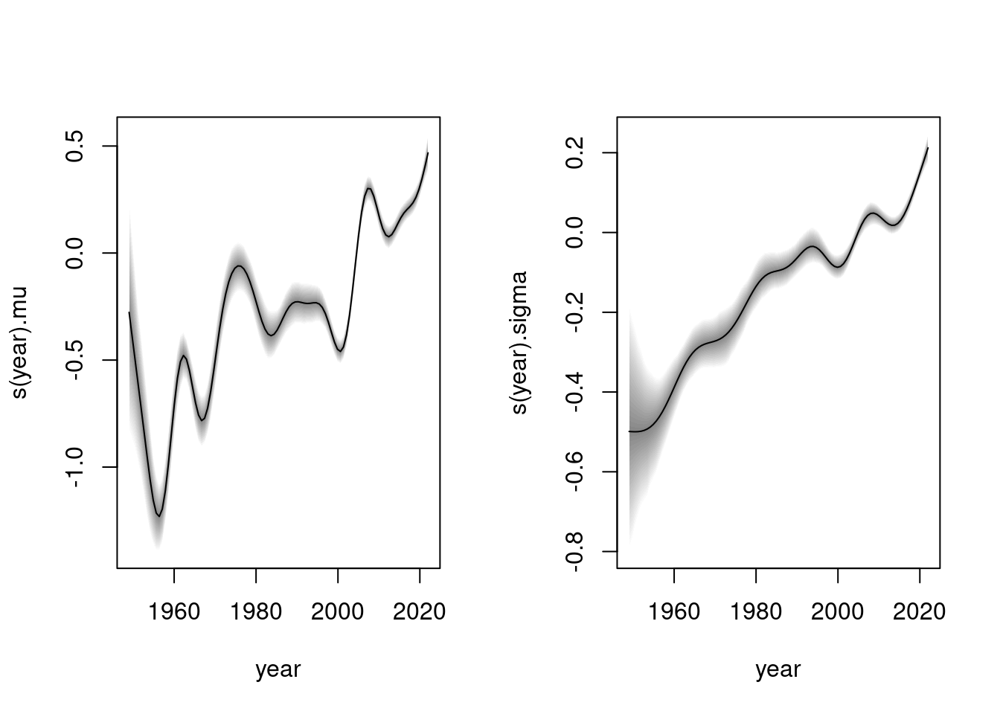
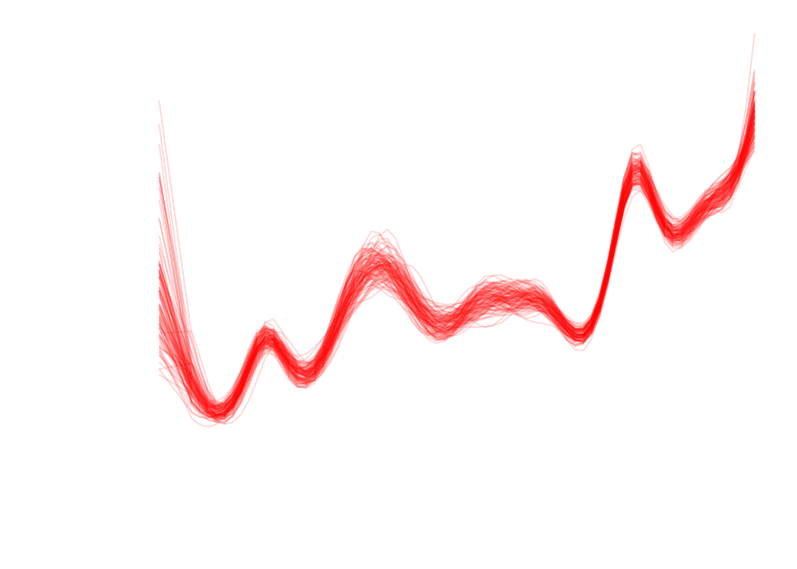
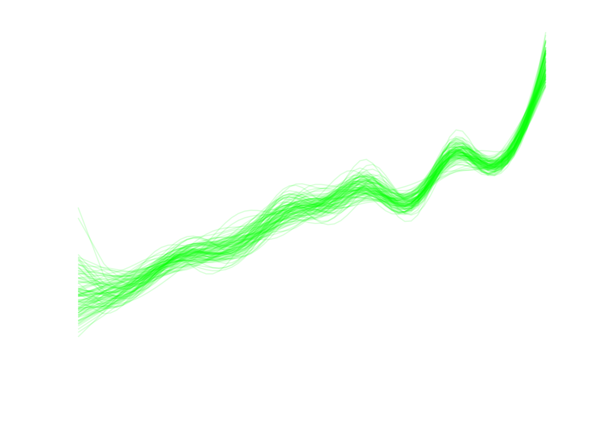
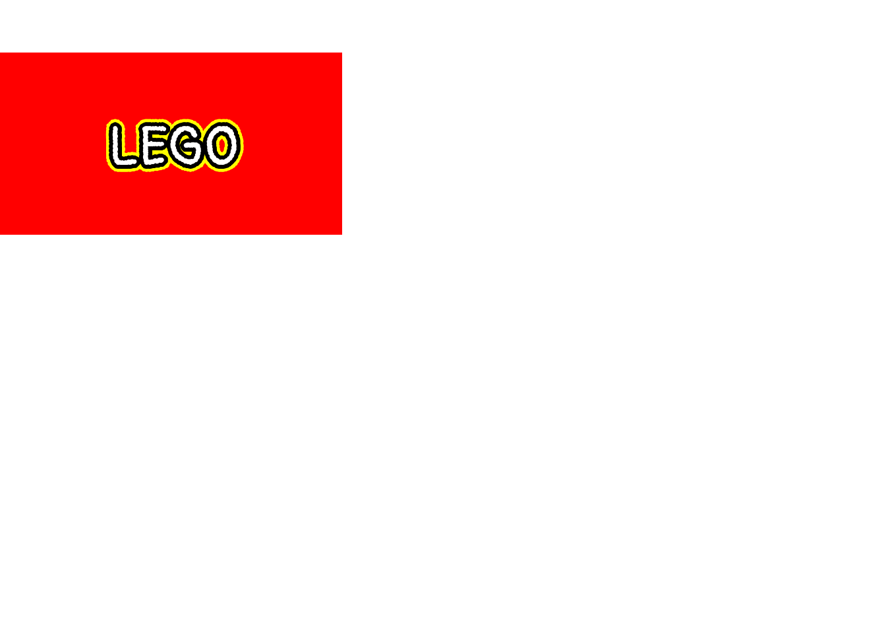
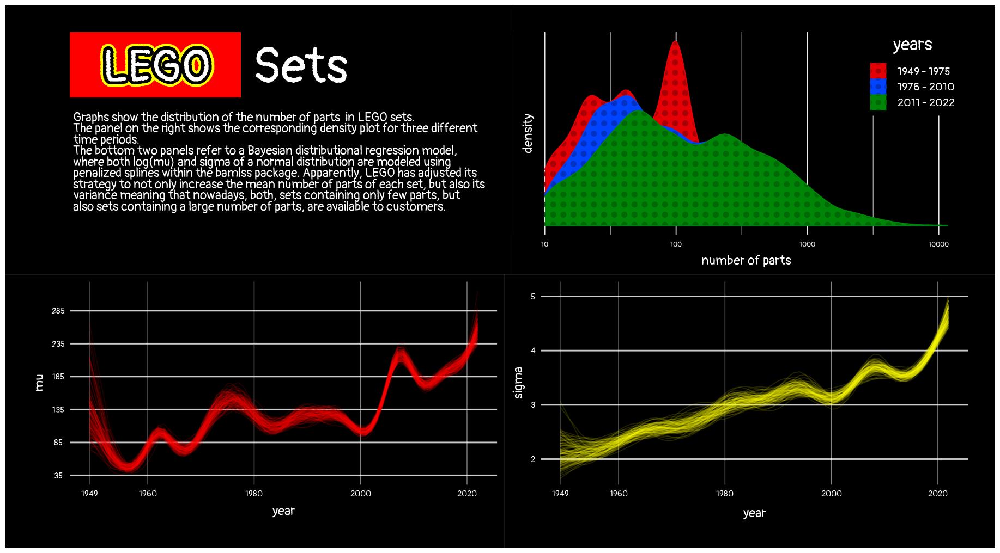

# data <- tidytuesdayR::tt_load("2022-09-06")
inventories <- readr::read_csv('https://raw.githubusercontent.com/rfordatascience/tidytuesday/master/data/2022/2022-09-06/inventories.csv.gz')
inventory_sets <- readr::read_csv('https://raw.githubusercontent.com/rfordatascience/tidytuesday/master/data/2022/2022-09-06/inventory_sets.csv.gz')
sets <- readr::read_csv('https://raw.githubusercontent.com/rfordatascience/tidytuesday/master/data/2022/2022-09-06/sets.csv.gz')
lego <- left_join(inventories, inventory_sets, by = "set_num") |>
left_join(sets, by = "set_num") LEGO Sets
Tidy Tuesday
This is my eleventh contribution to TidyTuesday, which is ‘a weekly podcast and community activity brought to you by the R4DS Online Learning Community’. Their goal is to help R learners learn in real-world contexts.
For more information, visit the TidyTuesday homepage, check out their GitHub repository and follow the R4DS Learning Community on Twitter.
The purpose of these posts is mainly for exercising purposes. Thus, the provided graphs are not necessarily designed to provide the greatest possible insights. However, I always provide the R code for interested people at the page bottom.
Loading required package: codaLoading required package: colorspaceLoading required package: mgcvLoading required package: nlmeThis is mgcv 1.8-40. For overview type 'help("mgcv-package")'.
Attaching package: 'bamlss'The following object is masked from 'package:mgcv':
smooth.constructLoading required package: sysfontsLoading required package: showtextdbLEGO sets
This week’s data comes from rebrickable courtesy of Georgios Karamanis. The dataset contains 35,023 observations of LEGO sets over a time horizon from 1949 to 2022. This is a quick look at the variables (from the Tidy Tuesday vignette):
| variable | class | description |
|---|---|---|
| id | integer | variable |
| version | double | variable |
| set_num | character | variable |
| inventory_id | double | variable |
| name | character | variable |
| quantity | double | variable |
| year | double | variable |
| theme_id | double | variable |
| num_parts | double | variable |
| img_url | character | variable |
The descriptions are in this case not very informative.
Goals
The data offers a lot to visualize. One could of course, for example, use the ggpattern package again to include nice LEGO backgrounds. This week, however, I want to provide a quick example of Bayesian distributional regression, where a whole distribution is fit to the data, instead of, e.g. just the mean. For this purpose, I will be using the bamlss package. I want to pay a special focus on how the distribution of the number of parts in LEGO sets has changed over time.
Descriptives: Density plots
To gain a first overview, I plot the corresponding distributions over time. Here, I actually decided to use the ggpattern package to plot the densities in a nice LEGO style. To keep things cleaner, I first cut the complete time horizon into strips:
# data cleaning first, also remove entries w/ less than 10 # of parts to regard actual sets
lego <- subset(lego, !is.na(year) & !is.na(num_parts) & num_parts >= 10)
lego$time_cut <- cut(lego$year, breaks = c(1949, 1975, 2010, 2022), include.lowest = TRUE)
levels(lego$time_cut) <- c("1949 - 1975", "1976 - 2010", "2011 - 2022")
# actual density plot
legend.title = "years"
plot1 <- ggplot(lego) +
theme_minimal() +
geom_density_pattern(aes(x = num_parts, fill = time_cut, color = time_cut,
pattern_fill = time_cut, pattern_color = time_cut),
pattern = "circle",
pattern_angle = 90,
pattern_density = 0.5) +
scale_pattern_fill_manual(values = c("#a80005", "#0031c3", "#006906")) +
scale_pattern_color_manual(values = c("#a80005", "#0031c3", "#006906")) +
scale_fill_manual(values = c("#e40004", "#0044ff", "#008607")) +
scale_color_manual(values = c("#e40004", "#0044ff", "#008607")) +
scale_x_log10() +
labs(
fill = legend.title,
color = legend.title,
pattern_fill = legend.title,
pattern_color = legend.title,
x = "number of parts"
) +
theme(
legend.position = c(0.875, 0.8),
panel.background = element_rect(fill = "transparent", color = NA),
plot.background = element_rect(fill = "transparent", color = NA),
axis.title.x = element_text(face = "bold", color = "white", family = "kalam", size = 18, margin = margin(8, 0, 0, 0)),
axis.title.y = element_text(face = "bold", color = "white", angle = 90, family = "kalam", size = 18, margin = margin(0, -20, 0, 0)),
axis.text.x = element_text(color = "white", family = "kalam"),
axis.text.y = element_blank(),
axis.ticks = element_blank(),
axis.ticks.length = unit(.2, "cm"),
legend.background = element_rect(fill = "transparent", color = NA),
legend.text = element_text(color = "white", size = 15, family = "kalam"),
legend.title = element_text(color = "white", family = "kalam", hjust = 0.5, size = 25),
panel.grid.major.y = element_blank(),
panel.grid.minor.y = element_blank()
) +
theme(plot.margin = margin(30, 30, 8, 7))
plot1
From the plot it seems that over the years, the number of parts in LEGO sets has increased both with regard to its expected value and its variance. There is a gradual shift from the left to the right. This could of course be part of some diversification strategy of LEGO (of course, this is just speculation).
Bayesian Distributional Regression
Now, as explained earlier, I employ the bamlss package to model the number of parts’ distribution. Of course, it would be good to first look for an appropriate distribution to fit to the data. I don’t undergo this procedure in this case, however.
AICc 51042.93 logPost -25593.4 logLik -25493.6 edf 27.763 eps 0.8122 iteration 1
AICc 50998.71 logPost -25578.0 logLik -25468.6 edf 30.675 eps 0.1131 iteration 2
AICc 50997.60 logPost -25578.0 logLik -25467.7 edf 30.967 eps 0.0125 iteration 3
AICc 50997.53 logPost -25578.1 logLik -25467.7 edf 30.988 eps 0.0008 iteration 4
AICc 50997.52 logPost -25578.1 logLik -25467.7 edf 30.990 eps 0.0000 iteration 5
AICc 50997.52 logPost -25578.1 logLik -25467.7 edf 30.990 eps 0.0000 iteration 5
elapsed time: 1.08sec
Starting the sampler...
| | 0% 23.32sec
|* | 5% 21.66sec 1.14sec
|** | 10% 19.95sec 2.22sec
|*** | 15% 19.33sec 3.41sec
|**** | 20% 18.83sec 4.71sec
|***** | 25% 18.64sec 6.21sec
|****** | 30% 17.70sec 7.59sec
|******* | 35% 16.91sec 9.11sec
|******** | 40% 15.84sec 10.56sec
|********* | 45% 14.95sec 12.23sec
|********** | 50% 13.88sec 13.88sec
|*********** | 55% 12.60sec 15.39sec
|************ | 60% 11.26sec 16.88sec
|************* | 65% 9.99sec 18.55sec
|************** | 70% 8.61sec 20.09sec
|*************** | 75% 7.26sec 21.78sec
|**************** | 80% 5.85sec 23.38sec
|***************** | 85% 4.42sec 25.04sec
|****************** | 90% 2.97sec 26.70sec
|******************* | 95% 1.54sec 29.35sec
|********************| 100% 0.00sec 31.30secA first glance at the model:
par(mfrow = c(1, 2))
plot(m)
It is interesting to see that both the mean and variance (or standard deviation) of the number of parts increases gradually with time. The strategy to release sets with more parts and increasing the variance at the same time thus does not seem to be a sudden decision, but instead a strategy that has been adjusted gradually. This is of course just a first look at the data and conclusions have to be regarded cautiously.
Bayesian Plots
Now, I finally take the first plot and make a visually (somewhat) nice plot out of it.
# to speed things up, don't use all samples, but just 200
smpl <- sample(1000, 100)
# get predictions from sampled coefficients
p.mu <- predict(m, model = "mu", type ="parameter", FUN = function(x) {x})
# bias correction: mean of exp(residuals)
h_0 <- mean(exp(residuals(m)))
p.mu <- lapply(smpl, function(x) h_0 * exp(p.mu[[x]]))
p.final.mu <- h_0 * exp(predict(m, model = "mu", type = "parameter"))
# convert into tidy format for ggplot
plot.tab.mu <- do.call(cbind, p.mu)
plot.tab.mu <- cbind(lego[order(lego$year), ]$year, plot.tab.mu)
plot.tab.mu <- data.frame(plot.tab.mu)
plot.tab.mu <- plot.tab.mu %>% pivot_longer(X2:X101, values_to = "predictions")
# plot mu
font_add_google("Pangolin", "kalam")
p2 <- ggplot(subset(plot.tab.mu, name %in% paste0("X", 2:101)), aes(x = X1, y = predictions, group = name)) +
geom_line(col = alpha("red", 0.14)) +
theme_void() +
scale_y_continuous(breaks = seq(35, 315, 50)) +
scale_x_continuous(breaks = c(1949, seq(1960, 2020, 20))) +
labs(x = "year", y = "mu") +
theme(
panel.background = element_rect(fill = "transparent", color = NA),
plot.background = element_rect(fill = "transparent", color = NA),
panel.grid.major.x = element_line(color = alpha("white", 0.5), size = 0.4),
panel.grid.major.y = element_line(color = alpha("white", 0.8), size = 0.8),
axis.title.x = element_text(face = "bold", color = "white", family = "kalam", size = 18, margin = margin(8, 0, 5, 0)),
axis.title.y = element_text(face = "bold", color = "white", angle = 90, family = "kalam", size = 18, margin = margin(0, 8, 0, 0)),
axis.text = element_text(color = "white", family = "kalam"),
axis.ticks = element_blank(),
axis.ticks.length = unit(.2, "cm")
) +
coord_cartesian(ylim = c(35, 315)) +
theme(plot.margin = margin(8, 8, 30, 30))
p2
# get predictions for sigma
p.sigma <- predict(m, model = "sigma", type ="parameter", FUN = function(x) {x})
p.final.sigma <- predict(m, model = "sigma", type = "parameter")
p.final.sigma <- exp(p.final.sigma)
# transformation of sigma
p.sigma <- lapply(smpl, function(x) exp(p.sigma[[x]]))
# convert into tidy format for ggplot
plot.tab.sigma <- do.call(cbind, p.sigma)
plot.tab.sigma <- cbind(lego[order(lego$year), ]$year, plot.tab.sigma)
plot.tab.sigma <- data.frame(plot.tab.sigma)
plot.tab.sigma <- plot.tab.sigma %>% pivot_longer(X2:X101, values_to = "predictions")
# plot mu
p3 <- ggplot(subset(plot.tab.sigma, name %in% paste0("X", 2:101)), aes(x = X1, y = predictions, group = name)) +
theme_void() +
scale_y_continuous(breaks = 2:5) +
scale_x_continuous(breaks = c(1949, seq(1960, 2020, 20))) +
geom_line(col = alpha("green", 0.14)) +
labs(x = "year", y = "sigma") +
theme(
panel.background = element_rect(fill = "transparent", color = NA),
plot.background = element_rect(fill = "transparent", color = NA),
panel.grid.major.x = element_line(color = alpha("white", 0.5), size = 0.4),
panel.grid.major.y = element_line(color = alpha("white", 0.8), size = 0.8),
axis.title.x = element_text(face = "bold", color = "white", family = "kalam", size = 18, margin = margin(8, 0, 0, 0)),
axis.title.y = element_text(face = "bold", color = "white", angle = 90, family = "kalam", size = 18, margin = margin(0, 8, 0, 0)),
axis.text = element_text(color = "white", family = "kalam"),
axis.ticks = element_blank(),
axis.ticks.length = unit(.2, "cm")
) +
coord_cartesian(ylim = c(1.7, 5.1)) +
theme(plot.margin = margin(8, 30, 30, 8))
p3
Final Plot
Now, I add everything together with the patchwork package.
theme_set(theme(text = element_text(family = "kalam")))
showtext_auto()
logo <- ggplot() + # Draw ggplot2 plot with text only
theme_void() +
geom_rect(aes(xmin = 0, xmax = 1.25, ymin = 0.8, ymax = 1.3), fill = "red") +
geom_shadowtext(aes(x = 1, y = 1, label = "LEGO", family = "kalam"), bg.color = "yellow", bg.r = 0.18, size = 22, fontface = "italic") +
geom_shadowtext(aes(x = 1, y = 1, label = "LEGO", family = "kalam"), bg.color = "black", size = 22,
fontface = "italic") +
geom_text(
aes(x = 1.43, y = 1, label = "Sets"), family = "kalam", size = 24, fontface = "bold", color = "white") +
geom_text(aes(x = 0.75, y = 0.4, label = "Graphs show the distribution of the number of parts in LEGO sets. \nThe panel on the right shows the corresponding density plot for three different \ntime periods.\nThe bottom two panels refer to a Bayesian distributional regression model, \nwhere both log(mu) and sigma of a normal distribution are modeled using \npenalized splines within the bamlss package. Apparently, LEGO has adjusted its \nstrategy to not only increase the mean number of parts of each set, but also its \nvariance meaning that nowadays, both, sets containing only few parts, but \nalso sets containing a large number of parts, are available to customers. "), size = 6, color = "white", family = "kalam", lineheight = 0.6, hjust = 0) +
coord_cartesian(ylim = c(0,1.15), xlim = c(0.8, 2)) +
theme(panel.background = element_rect(fill = "transparent", color = NA),
plot.background = element_rect(fill = "transparent", color = NA)) +
theme(plot.margin = margin(30, 0, 8, 0))
logo
Now, I can use the patchwork package to plug all plots together
(logo + plot1) / (p2 + p3) &
plot_annotation(theme = theme(plot.background = element_rect(color = "black", fill = "black")))
Full R code available on Github.
References
colorspace-package:
https://colorspace.r-forge.r-project.org/index.htmlbamlss-package:
http://bamlss.org/parallel-package:
https://parallelly.futureverse.org/shadowtext-package:
https://github.com/GuangchuangYu/shadowtext/ggpattern-package:
https://coolbutuseless.github.io/package/ggpattern/index.htmlshowtext-package:
https://cran.r-project.org/web/packages/showtext/index.htmlggtext--package:
https://wilkelab.org/ggtext/patchwork--package:
https://patchwork.data-imaginist.com/tidyr--package:
https://tidyr.tidyverse.org/`rlist``--package:
https://renkun-ken.github.io/rlist/